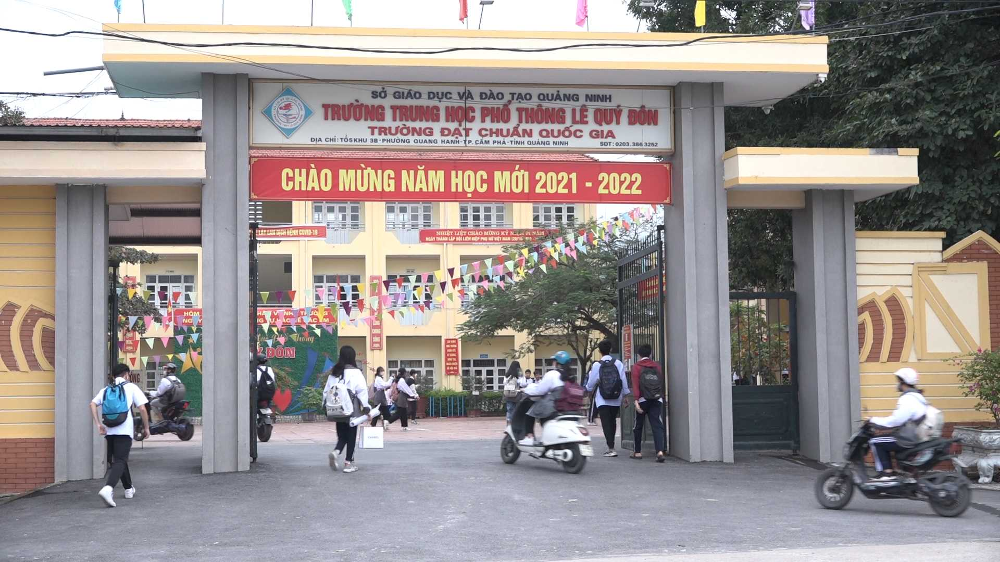
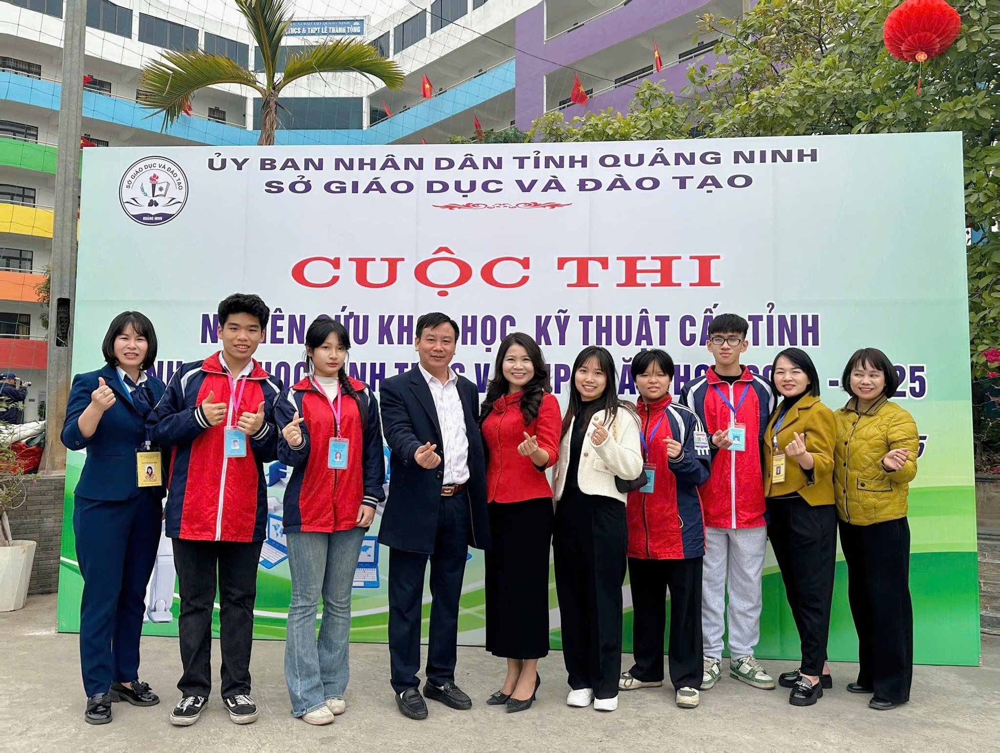
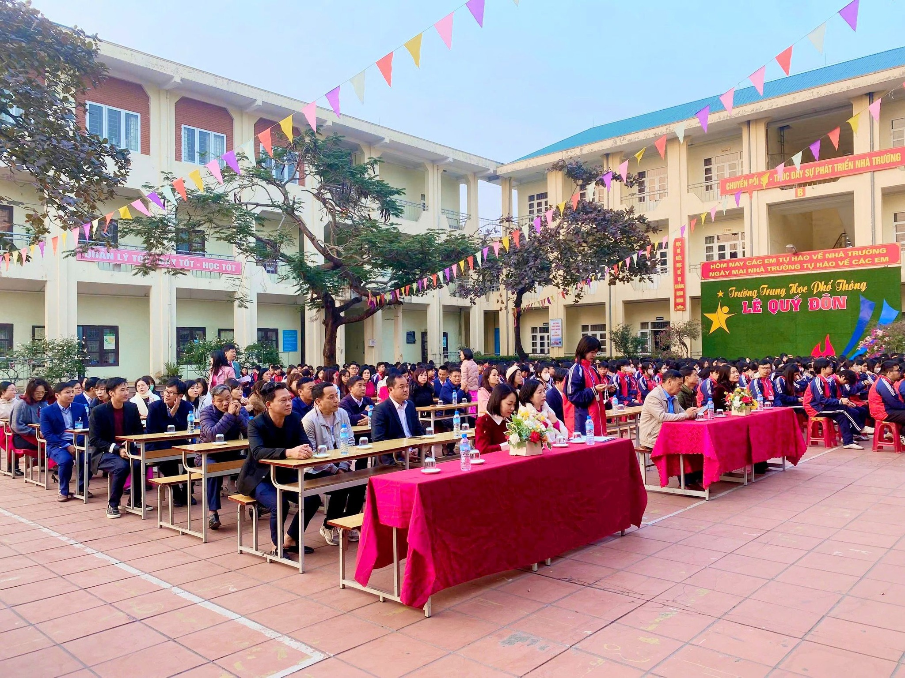

GIỚI THIỆU TRƯỜNG THPT LÊ QUÝ ĐÔN – CẨM PHẢ, QUẢNG NINH
Lịch sử hình thành và phát triển
Trường THPT Lê Quý Đôn – Cẩm Phả là một trong những ngôi trường có bề dày truyền thống giáo dục tại thành phố Cẩm Phả, tỉnh Quảng Ninh. Được thành lập vào năm 1991, trường đã trải qua nhiều giai đoạn phát triển và khẳng định được vị thế của mình trong hệ thống giáo dục trung học phổ thông trên địa bàn tỉnh.
Với sứ mệnh đào tạo ra những thế hệ học sinh ưu tú, có tri thức vững vàng, đạo đức tốt và kỹ năng sống phong phú, Trường THPT Lê Quý Đôn không ngừng đổi mới, nâng cao chất lượng giảng dạy và học tập. Từ những ngày đầu thành lập với cơ sở vật chất còn nhiều khó khăn, đến nay trường đã có những bước tiến mạnh mẽ, trở thành một trong những ngôi trường hàng đầu tại địa phương.
Cơ sở vật chất
Trường THPT Lê Quý Đôn – Cẩm Phả hiện nay được trang bị cơ sở vật chất khang trang, hiện đại, đáp ứng tốt nhu cầu giảng dạy và học tập. Trường có hệ thống các phòng học đạt chuẩn, được trang bị bảng thông minh, máy chiếu và các thiết bị hỗ trợ giảng dạy tiên tiến. Ngoài ra, trường còn có:
- Thư viện rộng rãi với hàng nghìn đầu sách phục vụ cho việc học tập và nghiên cứu.
- Phòng thí nghiệm, phòng thực hành tin học hiện đại giúp học sinh có cơ hội tiếp cận với kiến thức thực tiễn.
- Khu thể thao đa năng gồm sân bóng đá, bóng rổ, cầu lông, phòng tập thể hình, phòng múa, giúp học sinh rèn luyện thể chất và phát triển tài năng.
- Khuôn viên thoáng mát, có khuôn viên cây xanh tạo không gian học tập lý tưởng cho học sinh.
Nhà trường cũng đặc biệt chú trọng đến việc ứng dụng công nghệ thông tin vào giảng dạy với hệ thống máy tính hiện đại, mạng internet tốc độ cao, giúp học sinh dễ dàng tiếp cận với các nguồn tài liệu học tập phong phú trên thế giới.
Đội ngũ giáo viên
Trường sở hữu đội ngũ giáo viên giỏi, có trình độ chuyên môn cao, tận tâm với nghề và luôn đổi mới phương pháp giảng dạy nhằm mang đến cho học sinh những giờ học hiệu quả, sinh động. Các thầy cô giáo không chỉ là người truyền đạt kiến thức mà còn là những người định hướng, dìu dắt học sinh trên con đường học tập và trưởng thành.

Trường thường xuyên tổ chức các buổi tập huấn, hội thảo chuyên môn nhằm nâng cao kỹ năng giảng dạy, đồng thời khuyến khích giáo viên tham gia nghiên cứu khoa học và đổi mới sáng tạo trong giáo dục. Bên cạnh đó, nhà trường còn hợp tác với các chuyên gia giáo dục, các giảng viên đại học để tổ chức các chương trình bồi dưỡng giáo viên, giúp nâng cao chất lượng giảng dạy.
Thành tích nổi bật
Trong suốt quá trình phát triển, Trường THPT Lê Quý Đôn – Cẩm Phả đã đạt được nhiều thành tích đáng tự hào: Tỉ lệ học sinh đỗ tốt nghiệp THPT luôn ở mức cao, thường xuyên nằm trong top đầu của tỉnh Quảng Ninh. Nhiều học sinh đạt giải cao trong các kỳ thi học sinh giỏi cấp tỉnh, cấp quốc gia và quốc tế. Tích cực tham gia các hoạt động ngoại khóa, văn hóa, thể thao và đạt nhiều thành tích xuất sắc. Trường nhiều lần được công nhận là tập thể lao động xuất sắc, nhận bằng khen của các cấp chính quyền. Học sinh của trường có cơ hội tham gia các cuộc thi quốc tế, giao lưu học thuật với các trường THPT danh tiếng trong nước và nước ngoài. Nhà trường đã đào tạo ra nhiều thế hệ học sinh xuất sắc, hiện đang giữ những vị trí quan trọng trong các cơ quan nhà nước, doanh nghiệp lớn và các tổ chức quốc tế.
Phương hướng phát triển
Trong những năm tới, Trường THPT Lê Quý Đôn – Cẩm Phả tiếp tục phát huy truyền thống dạy tốt - học tốt, đẩy mạnh ứng dụng công nghệ thông tin vào giảng dạy, nâng cao chất lượng giáo dục toàn diện, tạo dựng môi trường học tập lành mạnh, hiện đại và chuyên nghiệp. Nhà trường cũng chú trọng đến việc giáo dục kỹ năng sống, tinh thần trách nhiệm cho học sinh, giúp các em có đầy đủ hành trang để bước vào cuộc sống. Bên cạnh đó, trường hướng đến việc mở rộng quan hệ hợp tác quốc tế, thúc đẩy chương trình trao đổi học sinh, tạo điều kiện để học sinh có cơ hội tiếp cận với nền giáo dục tiên tiến trên thế giới.
Kết luận
Với những thành tựu đã đạt được cùng sự quyết tâm đổi mới, Trường THPT Lê Quý Đôn – Cẩm Phả ngày càng khẳng định được vị thế của mình trong hệ thống giáo dục tỉnh Quảng Ninh. Đây là ngôi trường mà nhiều thế hệ học sinh đã trưởng thành, mang theo hành trang tri thức để vươn xa trong cuộc sống. Nhà trường sẽ tiếp tục là nơi ươm mầm tri thức, chắp cánh ước mơ cho bao thế hệ học sinh trong tương lai. Trường cũng cam kết không ngừng đổi mới và nâng cao chất lượng giảng dạy, trở thành một trung tâm giáo dục xuất sắc không chỉ trong tỉnh Quảng Ninh mà còn trên cả nước.